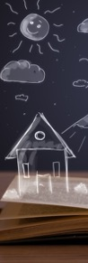

Fabulating Alternative Imaginaries in Art and Life
Conference-festival March 27, 28, 29, 30
Stedelijk Museum Amsterdam
A conference about using the fictional to produce or uncover visions, histories and stories that are radically discontinuous from official and dominant narratives about our lives and living together. The effect of this "fabulation" on our consciousness and imaginaries can therefore be very real or liberating.